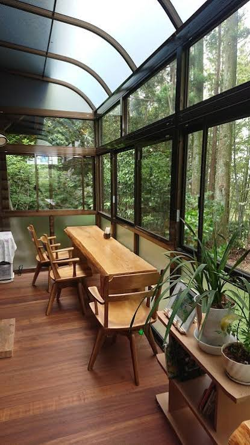

店のコンセプト

「喫茶こもれび」は、店内に木のぬくもりを感じられる、静かで落ち着いた小さな喫茶店です。
木漏れ日のように優しく温かい光が差し込む店内で、心安らぐひとときをお過ごしいただけます。こだわりの自家焙煎珈琲と手作り菓子を用意して、皆さまのお越しをお待ちしております。
私たちのこだわり
☕ 自家焙煎珈琲
一杯ずつ丁寧にハンドドリップでお淹れします。芳醇な香りと深い味わいをお楽しみください。
🪵 木のぬくもり空間
天然木を基調としたインテリアで統一し、都会の喧騒を忘れられるリラックス空間を提供します。
🍰 手作り焼き菓子
コーヒーにぴったりの季節限定ケーキやスコーンを毎日店内で手作りして焼き上げています。
過ごし方のご提案
おひとりさまでゆっくり読書を楽しんだり、ご友人と静かにおしゃべりをしたり。どんな過ごし方も歓迎いたします。
Wi-Fiや電源を備えた席もご用意しておりますので、ご自分のペースで慌ただしい日常を離れてリラックスしてください。
